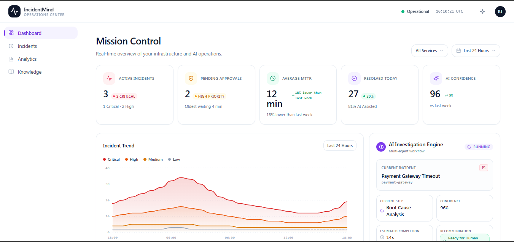
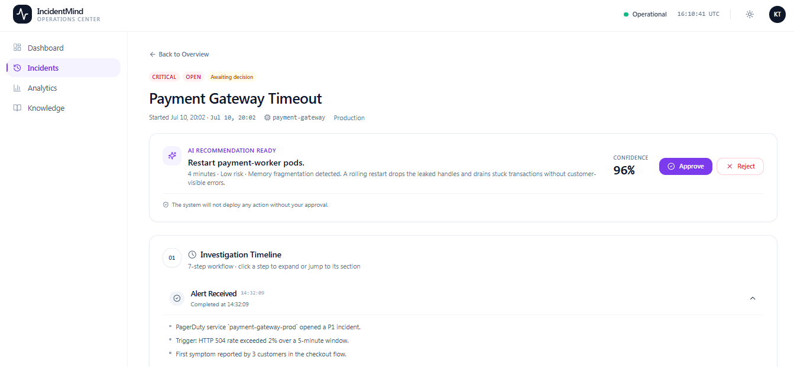
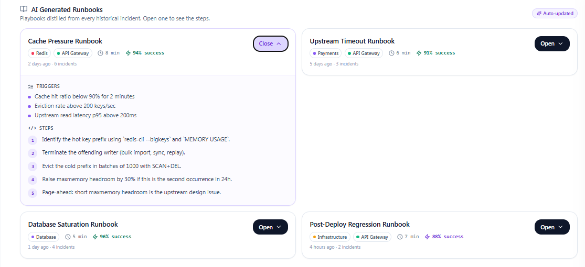

Project 02 // AI / Incident Response
02
IncidentMind
AI incident response & postmortem platform
IncidentMind helps engineering teams investigate production incidents faster. It orchestrates multiple AI agents, retrieves similar historical incidents through semantic search, and validates AI-generated outputs — reducing the time spent on manual investigation while improving the reliability of incident reports.
Open live deployment → View repository →
92%
Human approval rate
540
Recommendations generated
96%
Confidence on the shown incident
8
Capabilities shipped

The problem
Managing technical incidents is often complex and time-consuming, as teams struggle to correlate events across multiple systems, reconstruct incident timelines, identify root causes, and prepare post-mortem reports. Manual investigation can lead to delays, missed connections, and incomplete analysis.
What I built
An AI-powered incident response and post-mortem automation platform — Mastra for agent orchestration, Qdrant for vector-based knowledge retrieval, Enkrypt AI for secure AI interactions. Specialised agents analyse incident data, reconstruct timelines, identify probable root causes, assign confidence scores and generate structured post-mortems, with a 92% human approval rate across 540 generated recommendations.
What the platform does
- Multi-agent incident investigation.
- Automatic incident timeline generation.
- AI-powered root cause analysis.
- Semantic retrieval using Qdrant.
- AI output validation with Enkrypt AI.
- Automated postmortem generation.
- Stakeholder communication summaries.
- Confidence scoring for generated insights.
The human stays in the loop
- Every recommendation carries its own confidence score and its own approve / reject controls.
- 92% of the 540 generated recommendations were approved by a human — the other 8% were rejected rather than applied silently.
- Incident detail arrives with the full investigation timeline attached, not just a verdict.
- Runbooks are distilled from every incident, so the next one starts from what the last one taught.
What incidents used to cost
Production incidents often require engineers to manually analyse logs and incident reports, build timelines from scattered information, perform root cause analysis, search previous incidents, draft stakeholder updates and write postmortems.
These repetitive tasks slow down recovery and increase operational overhead. IncidentMind automates that workflow instead of asking an engineer to do it twice.
More from the build


- TypeScript
- Mastra
- Qdrant
- Enkrypt AI
- Node.js
- pnpm